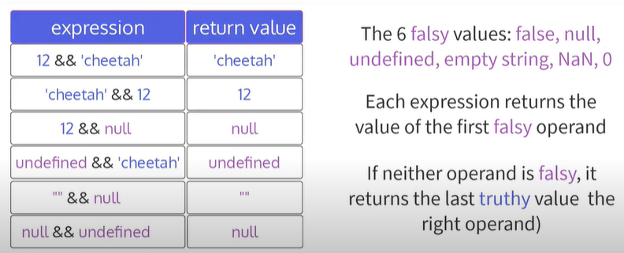
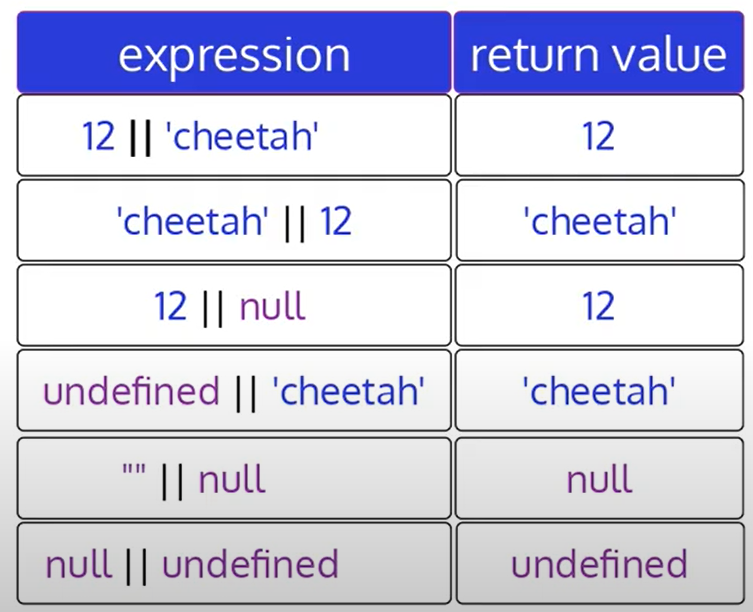
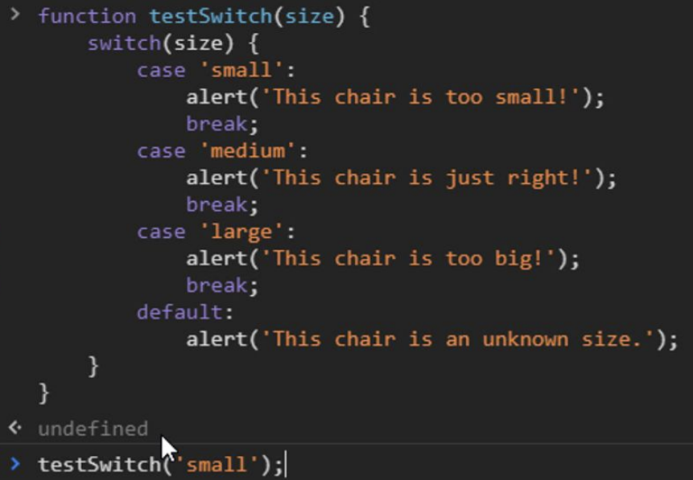
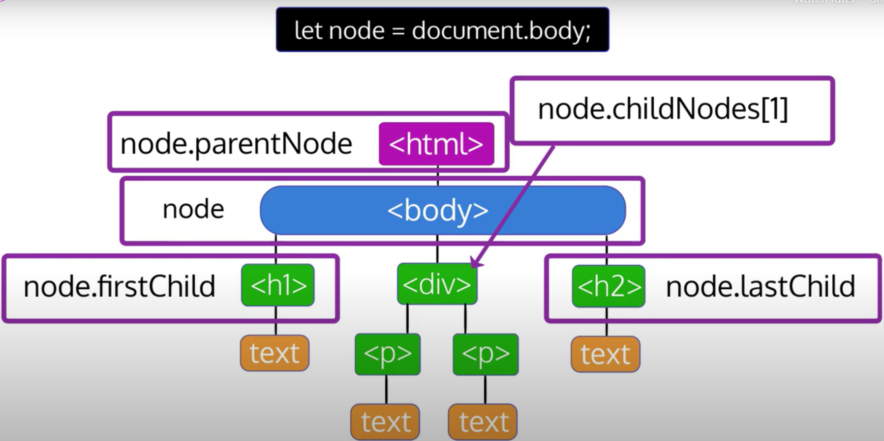
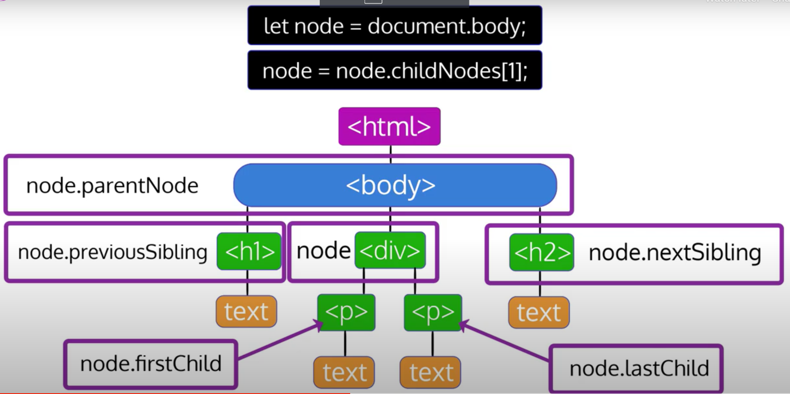

Can write Javascript in HTML using <script></script> tags in body or connect Javascript file <script src = "js/file.js"></script> in HTML can have onclick button to run JavaScript
Variables
A named container for some value ex. label for a box
Data Types
Numbers: can be positive, negative, whole, decimal
Strings: characters inside single or double quotes
Numbers can be used in strings but will be considered text not math symbols
Booleans: values are either true or false (no quotes)
Null: empty/non-existent value, intentional absence of a value
only one possible value- value of null
Undefined: value given to variables that have been declared but not initialized
only one possible value- value of undefined
Function can also return undefined
Variable Declaration: Let
Declare/create a variable using the let keyword
let myScore;
using a semicolon terminates statements
statement instructs computer to "create a variable named myScore"
computer will give it a default value of undefined
Variable Initialization & Assignment
Assignment operator (=): declare a variable and assign a value at the same time
let myScore = 1055;
myScore has a value of 1055
Initialze: the first time you assign a value to a variable
Variable Reassignment
Reassign: use the variable name, the assignment operator, and a new value (do not use let again)
let myScore = 1055;
myScore = 1056;
myScore has a value of 1056
Variable Declaration: Const
Const stands for constant
must initialize a const variable when you declare it
cannot reassign a const variable
const playerName="Luigi";
Const vs Let
Use let for variables where the values could be reassigned
ex. the score in a game
let score = 0;
Use const for variables where the values will not be reassigned
ex. the players name in a game
const playerName="Luigi";
let and const introduced in 2015, before was one variable (var)
Functions
a way to write reuseable code
can write code in one place and use it elsewhere as many times as you like
2 types: built-in functions ex. alert() and functions we make ourselves
Defining a Function
one way to define/create a function is with a function declaration
function sayHello() { ...some code...
}
doesn't automatically run when defined/declared
sayHello(argument);
in this case, no outside values are needed, so parameter list is empty
parantheses after the function name contains the parameter list
Parameter list: used to pass values into the function, if needed
Calling a Function
defining a function does not call (run) the function
in HTML, can call a function with the onclick event handler
in JavaScript, use function name followed by parentheses
sayHello();
since the parameter list is empty for function definition, the argument list is also empty
parantheses in a function call contain the argument list
Argument list: parallels the function declaration/definition's parameter list
Function Parameters & Arguments
Use parameters and arguments to pass data from outside a function into a function
function sayWord(word) { alert(word); }
parameter list is 1 local variable named word
when called, function will automatically declare local variables based on its parameter list
variable doesn't need to be declared with let or const, it only exists inside the function, and it will be automatically deleted when the function ends
name doesn't need to be unique within the document, only within the function
local variables only exist within code block; can't access from outside it; can also be created using let/const
When a function is called, the variables declared inside the function from the parameter list receive their values from the function call's argument list
assignment is based on order of appearance in the list
Function declaration:
function getArea(width, length) { alert(width*length); }
Function call:
getArea(3,4)
width=3, length=4, will show alert is 12
Summary: function parameters define the names of variables declared locally inside the function, whose values are provided from outside of the function
Summary: function arguments are used in function calls to provide those values
Function Return Values
functions always return a single value, if not provided, then returns the value of undefined
Return: returns a value to where the function was called where it can be used right away or stored inside a variable for later use
Function declaration:
function getArea(width, length) { return width*length; }
Function call:
let area = getArea(3,4)
alert(area);
Naming Functions and Variables
camelCase: use lower case first letter, upper case for any additional words
ex. studentFirstName
SCREAMING_SNAKE_CASE: custom variables not meant to be set or changed during a program's execution
ex. const MAX_ITEMS = 10;
JavaScript is case sensitive
JavaScript console tips
Built in browser dev tools to view error and warning messages, test small pieces of code, and log helpful messages during development
Console tab: shows error message & tells you the file the error is in
Sources tab: shows more details about where the error is
console.log: built in function to log info that we don't want to show up on the page
console.log("Alert sent!")
Test Code: whatever is entered in the console is evaluated as JavaScript and will return a single value
can declare a variable and run functions and console will remember the variable until you close the console
can clear text of console without clearing variables by clicking "Clear Console"
Conditional Statements: If
conditional statements represent forks in a path
when a program encounters a conditional statement, it will evaluate a given condition then decide what code to run based on that evaluation
If Statement
evaluates a condition and executes a block of code if the condition evaluates as true
Syntax
if (condition) { ...code block to run if condition is truthy... }
Ex. if (password === "SuperSecretPassword") { alert("Your password is correct!"); }
triple equals operator (===) compares value (password) and string (SuperSecretPassword) and returns boolean value of true if they match or false if they don't
If...Else
If statements can also have an else block following the if block
Ex. if (password === "SuperSecretPassword") { alert("Your password is correct!"); } else { alert("Wrong password!"); }
else block will only run when the if condition is false
If...Else If...Else
test more conditions in the same statement with else if
each if statement can only have 1 if block and 1 else block, but can add as many else if blocks between them as you want
=== strict equality/identity/triple equals operator: compares both operands' value and type
== loose equality/equality/double equals operator: performs type coercion (type converted without explicit request) before comparing value
ex. 5==="5" is false- comparing number and string
ex. 5=="5" is true- double equals operator coerces types to match
avoid using double equals operator
!== strict inequality/nonidentity operator: compares both operands' value and type
!= loose inequality/inequality operator: performs type coercion (type converted without explicit request) before comparing value
ex. 5!=="5" is true- the two types are not equal
ex. 5!="5" is false- loose ineqaulity operator coerces types to match
generally, use strict versions (===) and (!==)
Relational operators
> greater than, < less than, >= greater than or equal to, <= less than or equal to
with number operands → work normally
5>10 false
with string operands → compare in lexicographical order
"aardvark">"anteater"
Logical Operators
3 logical operators in JavaScript
Logical And (&&), Logical Or (||), Logical Not(!)
&& and || are binary: take right and left operands
x&&y or x||y
! is unary: takes one right operand
!x
Logical And (&&)
returns first false value or last truthy value
tests if the left operand is truthy or falsy
Expression
Return value
true&&true
true
true&&false
false
false&&true
false
false&&false
false
&& returns the last truthy value if and only if both operands are truthy
if either operand is falsy, then && returns the first falsy value

Logical Or (||)
reutrns first truthy value or last falsy value
tests if the left operand is truthy or falsy
Expression
Return value
true||true
true
true||false
true
false||true
true
false||false
false
|| returns the first truthy value
if neither operand is truthy, then it will return the last falsy value

Logical Not (!)
unary operator placed just before 1 operand
Expression
Return value
!true
false
!false
true
!"cat"
false
!(3>2)
false
!"nucamp"===true
false
!("nucamp"===true)
true
always returns true or false
returns false when its operand's value is truthy
returns true when its operand's value is falsy
! type coerces its operand to a Boolean value then negates that value
use parantheses around the operand to ensure ! operates on the entire operand and not the first value in it
Double Not(!!)
not a new operator, but uses ! operator as shorthand for Boolean conversion
built-in JavaScript function Boolean()
Boolean(123) → true
first ! coerce to Boolean and negate
!123 → false
second !! reverse negation
!!123 → true
Arithmetic Operators
Addition assignment operator (+=) binary
instead of x = x + 2; can use x += 2
Subtraction assignment operator (-=) binary
instead of x = x - 2; can use x -= 2
Increment operator (++) unary
instead of y + 1; can use ++y
postfix (y++) returns the value before incrementation
let varName = 1
console.log(varName++); → 1
console.log(varName); → 2
OR
let varName = 1
console.log(++varName); → 2
console.log(varName); → 2
Decrement operator (--) unary
instead of y - 1; can use --y
postfix (y--) returns the value before decrementation
Conditional Statements: Switch
evaluates an expression and depending on expression value, will execute case or default code same as if...else statements, just more concise if have lots of expressions
4 keywords: switch, case, break, default
add break after or else will continue to next code
switch(expression) { case value: ...statements execute if expression matches this value... break; default: ...statement to execute if expression matches no case value... }

if don't have breaks, then will run all alerts
good to add default in case of typo or whatever
While Loops
evaluates a condition that you set → as long as it is true, it will continue to loop
at every iteration, the condition will be re-evaluated use when you only want something to run if it's true
while (condition to be evaluated) { ...code to run while condition is evaluated as true... }
something needs to happen inside the while loop to make the condition be evaluated as false or else it will keep looping
let i = 0; while (i<5) { console.log("This is iteration #" + i); }
will run 5 times ("This is iteration #1-5) until i > 5
Do...While Loop
loop block executes once before evaluating the condition
even if condition is false, the code inside the block will execute at least once use if you want something to run once even it if isn't true
do { ...code to run first once, then loop while the condition evaluates as true... } while (condition to be evaluated);
let i = 5; do { i += 1; console.log("This is iteration #" + i); } while (i < 5);
will show "This is iteration #6"
Scope
region of code where a variable exists and can be accessed
Local Scope
Block Scope (let & const)
variables declared using let and const have block scope
only accessible within the code block (any statement within {}) they're declared in and any of their child blocks
if (true) { let testVar = 1; } console.log(testVar);
testVar will show not defined (variable was not declared)
when the if block ended, the variable testVar was deleted
if (true) { let testVar = 1; if (true) { console.log(testVar); } }
will show 1
testVar is accessible because it is in the child block
can't declare a variable in child block, because parent can't see it
Function Scope (var)
similar to block scope, but can't be accessed from within function blocks (only if or switch, etc)
function used by variables declared with var keyword
Global Scope (mostly const)
variables declared outside of any code block have global scope (available everywhere)
best to declare variables with local scope instead of global because can lead to confusion and bugs
constants that won't change and are used multiple times can be globals
Arrays
numerically indexed values (can be strings, numbers, booleans, other arrays) each item in an array is indexed based on its order (starting with 0)
array literal syntax: [item1, item2, item3, ...]
to use an array more than once, store in a variable
const groceryList = ["eggs", "coffee", "salad"];
array item
"eggs"
"coffee beans"
"salad"
array index
0
1
2
to access array item: groceryList[0] → "eggs"
to modify array item: groceryList[0] = "bananas";
new array → const groceryList = ["bananas", "coffee", "salad"];
to see length of array (arrayName.length)
groceryList.length → 3
length of array is 3, but index is 0 through 2
to access last item in array (arrayName[arrayName.length-1]
for (const guest of guestArray) { console.log(`Welcome to the party ${guest}!`); }
shorter, cleaner syntax
Loop Control
2 statements that can be used inside any while or for loop:
Break- immediately exits a loop
for (let i = 0; i < 10; i++) { if (i === 5) { break; } console.log(i); }
console shows: 0 1 2 3 4
when i is equal to 5, the loop stops
Continue- immediately skip to the next iteration of the loop
for (let i = 0; i < 10; i++) { if (i === 5) { continue; } console.log(i); }
console shows: 0 1 2 3 4 6 7 8 9
when i is equal to 5, the loop skips 5 and continues until i is no longer less than 10
The DOM
DOM (stands for )Document Object Model) provides interface between JavaScript and HTML when browser loads HTML doc, it will internally represent it with the DOM (tree graph)
root node: <html>
head branch: <head> → <title> → text- DOM Example
<html> is parent node of <head> and <body>
<head> and <body> are child nodes of <html>
<h1> and <p> are sibling nodes with parent of <body>
text- Hello World! is a text node
doesn't show whitespace in browser, but displays in DOM
whitespace nodes (line breaks, tabs, spaces not part of text)
wouldn't have any whitespace if:
<body><p>Hello World</p></body>
Node Relationsips
can use the DOM as an interface to reference nodes in relation to each other traversing the DOM- can travel through the document via node connections
entry point into the DOM: let node = document.body; (good to use body because there's only 1 in any HTML document
Node Properties
.parentNode- gives the parent of the node
.firstChild & .lastChild- first and last child of the node
.nextSibling- very next sibling of the node
.previousSibling- immediate previous sibling of the node
.childNodes[...]- gives an iterable that contains all child nodes of a node called a NodeList use bracket notation with index (ex. .childNodes[1] for second child)

4 Ways to Locate Nodes
always start with keyword document.nodeProperty → references HTML document that is running code (data type = object) the very first node in the DOM tree Locating Nodes Example
traversing the DOM
start at document and go down the tree using node relationships
Example
function changeColor1() {
document.childNodes[1].childNodes[2].childNodes[3].style.color = 'red';
}
worst way: have to do a lot more work and if anything changes in HTML page, then whole thing is broken
getElementsByTagName()
looks for every element that is a particular tag name
can access a specific element by using bracket notation and its index number
Example
function changeColor2() {
document.getElementsByTagName('p')[0].style.color = 'orange';
}
can be good if want to change all of one element type, but not best for a specific element because need to know the order and order can be changed
getElementById()
uses id to target element specifically
Example
function changeColor3() {
document.getElementById('textToChange').style.color = 'blue';
}
should only have 1 id in the document so can directly access it
querySelector()
uses CSS selectors
Example
function changeColor4() {
document.querySelector('#textToChange').style.color = 'green';
}
more flexible and powerful because can use any CSS selector (even more complex ones: classes, element names, id, attribute selectors) rather than just an id
function changeColor4() { document.querySelector("p + button").style.background = "blue"; }
selects the first button right after a p element and turns its background blue
only gives you one so if want to get more than 1 element back, can use querySelectorAll() → returns node list of all nodes matching your selector
How to change HTML elements through JavaScript
been using node.style.color- accesses HTML style attribute
in JavaScript style property can further access the color property
several HTML attributes can be accessed in JavaScript like this
inline event handlers good for basic demos, but better to use built-in methods in JS because can add more than 1 handler function to the same event on the same element AND can remove eventListener
HTML: if onmouseover, onmouseover, onmouseout → only first onmouseover and onmouseout will work
JS: both mouseovers and mouseout will work
addEventListener()
Syntax
node.addEventListener("eventName", functionToRun)
event name like onclick, but without on and has to be in quotes (ex. "click", "mouseover")
function must be function name only (no argument list, no parantheses)